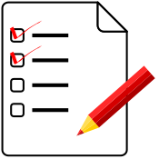

class: title-slide <div align="center" style="padding-top: 2rem;"> <p>Managing Research Software Projects</p> <h1>A Minimum Viable Project</h1> <p> <img src="../files/codebender.svg" alt="logo" width="20%" /> </p> </div> --- class: subhead ## First Collaborator - Tahia joins the lab - Wants to use the existing data and clean up some more <div align="center"> <p> <img src="../files/jess.svg" alt="Jess Avatar" width="20%" /></a> <img src="../files/tahia.svg" alt="Tahia Avatar" width="20%" /></a> </p> </div> - Jess divides the code between two repositories - One for data and data cleaning - The other for the simulation --- ## Collaboration as Learning - Jess and Tahia start using pull requests in the data cleaning repo - Biggest benefit is code review - Jess can look over Tahia's code before merging it - Her coding style improves as a result of the reviews - Which reduces the load on Jess - Jess has been reading [Stack Overflow][stack] for years - Starts posting questions for the first time - And including links to questions and answers in code and commits <div align="center"> <p> <img src="../files/stack-overflow.png" alt="Stack Overflow logo" width="40%" /></a> </p> </div> --- ## Sharing Data as Files - Tahia and Jess decide to put data on [DataDryad][datadryad] - Get a DOI for every dataset from [Zenodo][zenodo] - Require everyone in the lab to get an [ORCID][orcid] <div align="center"> <p> <img src="../files/dryad.png" alt="DataDryad logo" width="30%" /></a> </p> <p> <img src="../files/zenodo.png" alt="Zenodo logo" width="30%" /></a> </p> <p> <img src="../files/orcid.svg" alt="ORCID logo" width="30%" /></a> </p> </div> --- ## Sharing Data as Packages - Jess turns the simulation into a Python package - Includes a few data files - Can be installed directly from GitHub with `pip` ``` pip install git+ssh://git@github.com/gvwilson/nitinat ``` - More complicated than file upload - But allows people to get the data: - With the code that manipulates it - Using tools they have to learn anyway <div align="center"> <p> <img src="../files/cran.png" alt="CRAN logo" width="20%" /></a> <img src="../files/pypi.svg" alt="PyPI logo" width="20%" /></a> </p> </div> --- class: subhead ## Regression - Jess's supervisor takes on an undergraduate intern named Ren to help with data cleaning - Every change Ren makes works for the file he's looking at… - …but breaks processing of some other file <div align="center"> <p> <img src="../files/ren.svg" alt="Ren Avatar" width="30%" /></a> </p> </div> - Don't be Ren --- ## Testing - Jess starts adding tests with [pytest][pytest] to the data cleaning project - Creates small input files, each containing one problem - Test that the software reads and fixes the ones it's supposed to - And that it actually fails when it's supposed to - *Testing accelerates development* <div align="center"> <p> <img src="../files/pytest.png" alt="pytest logo" width="20%" /></a> </p> </div> --- ## Where Do Tests Come From? 1. Working backward from failures - Jess creates a reproducible example (reprex) each time the code fails - Throw away input until the problem goes away - Then undo the last change 2. Working forward from code - The [coverage][coverage] module shows which lines of code aren't tested - Jess constructs tests to reach untested lines - Coincidentally reveals some code that is no longer needed --- ## Design for Test - Some code is hard to reach with tests - Or requires thirty lines of setup for a two-line test - Both are signs that the code isn't modular - And will be hard to fix or extend in future - So Jess refactors the code so that parts aren't as tightly coupled <div align="center"> <p> <img src="../files/maze.svg" alt="maze" width="30%" /></a> </p> </div> --- ## Taschuk's Rules - Also cleans up according to [<a href="../bibliography/#Taschuk2017">Taschuk2017</a>] - Adds command-line argument handling - Eliminates hard-coded paths - Starts linting the code with [black][black], [flake8][flake8], and [isort][isort] - Forestalls a lot of <strike>argument</strike> discussion about coding style - Does *not* write comprehensive documentation (yet) - Still too early to know whether it will pay off - "Documentation, like research, mostly goes unread." --- class: subhead ## What Can Reasonably Go Wrong? - We knew something like COVID-19 was bound to happen eventually - Lots of people told us how to prepare - And those preparations would have made daily life better before the pandemic hit - We can predict some of the major changes that will happen to research software projects - Preparing for them now makes life better right away --- ## Things Are Going Well… - Jess and Tahia publish two papers about the data - Add a `CITATION.cff` file to the repository - Start to get email from other researchers - "How can I get your data?" - "Please add feature X so that I can clean up my data too" - Jess belatedly starts a blog - [Bewildering variety of tools][jamstack] - Eventually settles on [Hugo][hugo] - Hosted on [GitHub Pages][github-pages] <div align="center"> <p> <img src="../files/hugo.svg" alt="Hugo logo" width="20%" /></a> </p> </div> --- ## …And Then It Happens - Jess completes their PhD and starts working at a government lab rewriting their simulation - No longer has time for the data cleanup project - Agree that Tahia will become its lead - At this point Jess discovers that: - Project and personal communication are tangled up in their email - They do a _lot_ of things that they're not really conscious of doing --- class: sidebar ## Where You Don't Want to Be <div align="center" style="margin-top: 10ex;"> "<a href="https://github.com/celery/celery/issues/7351#issuecomment-1068956346">It seems quite crazy that the owner of the domain <br/> seems to be completely unknown to maintainers…</a>" </div> --- ## Communication - Register a domain name for the project - Still use Hugo to build the site and GitHub Pages to host it - Create an `admin@` account on that domain - Takes months to train people to send mail to it instead of directly to Jess --- ## Discussion - Create a mailing list for discussion - Debate using Slack and Discourse - Eventually agree they're already being interrupted too often <div align="center"> <p> <img src="../files/slack.svg" alt="Slack logo" width="20%" /></a> <img src="../files/discourse.svg" alt="Discourse logo" width="20%" /></a> </p> </div> - List is moderated - 0.1% of Reddit users generate 38% of attacks on others - 1% accounts for 74% of attacks [<a href="../bibliography/#Kumar2018">Kumar2018</a>] --- ## Code of Conduct - Add a Code of Conduct to the repository - Luckily, do this *before* announcing the handover - One contributor strongly objects to Tahia becoming project lead - Comments become very personal - Having CoC in place allows them to ban the person without being accused of personal animosity --- ## Checklists - Jess (finally) starts creating checklists - Each one is a Markdown file in the project's Git repository - Copy and paste into an issue each time the task needs to be done <div align="center"> <p>  </p> </div> --- ## Passwords - Also starts using a password manager - Allows them to share credentials with Tahia - And gives them a bit of protection from the disgruntled ex-contributor <div align="center"> <p> <img src="../files/bitwarden.svg" alt="BitWarden logo" width="25%"/> <img src="../files/1password.svg" alt="1password logo" width="25%"/> <img src="../files/lastpass.svg" alt="LastPass logo" width="25%"/> </p> </div> <p class="highlight"> Please see [<a href="../bibliography/#Smalls2021">Smalls2021</a>] for other steps you should take <em>right now</em>. </p> --- class: sidebar ## Roles and Responsibilities - A systematic way to create checklists <div align="center"> <table class="small"> <tr> <th>Person</th> <th>Roles</th> <td rowspan="2"></td> <th>Role</th> <th>Task</th> </tr> <tr> <td>ghopper</td> <td>admin</td> <td>admin</td> <td>merge PRs</td> </tr> <tr> <td>kjohnson</td> <td>admin, commit</td> <td align="center">×</td> <td>admin</td> <td>assign issues</td> </tr> <tr> <td>aturing</td> <td>commit</td> <td rowspan="2"></td> <td>commit</td> <td>publish posts</td> </tr> <tr> <td>bwk</td> <td>commit</td> <td>commit</td> <td>file issues</td> </tr> </table> </div> - Gives you a list of what actually needs to be done - It's always longer than you first expect - Tells everyone who to go to for what - Particularly when their first choice is on holiday - Helps with succession planning - "We don't have anyone who does that any more…" --- class: exercise ## The Hertweck Test Score your project from 0 to 10: - Code of Conduct - Files organized according to Noble's Rules - Collaborate via a Git repository - Share work as packages - Repeatable tests whose coverage is known - Code and data have licenses and DOIs - Searchable discussion archive - Checklists for important tasks - Passwords in a password manager - Defined roles 1. Pick one thing to improve by next session. 1. What else does your project do or have that makes life better? --- class: exercise ## Roles and Responsibilities 1. List things people do to keep your project going in Column A. 1. List people who contribute to the project in Column B. 1. Draw lines to connect them. What roles can you identify? --- class: exercise ## Checklist 1. Read through <a href="../checklist/">these checklists</a>. 1. What do you not do? 1. What do you do differently? 1. What do you do that isn't listed? 1. What would you take out of these checklists to make room for more important things? [black]: https://black.readthedocs.io/ [coverage]: https://coverage.readthedocs.io/ [datadryad]: https://datadryad.org/ [flake8]: https://flake8.pycqa.org/ [github-pages]: https://pages.github.com/ [handover]: https://third-bit.com/rules/#handing-over-and-moving-on [hugo]: https://gohugo.io/ [isort]: https://pycqa.github.io/ [jamstack]: https://jamstack.org/generators/ [orcid]: https://orcid.org/ [pytest]: https://docs.pytest.org/ [stack]: https://stackoverflow.com/ [zenodo]: https://zenodo.org/